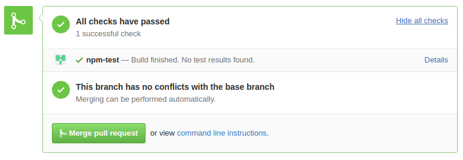
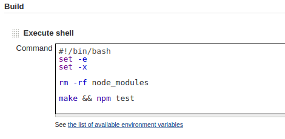
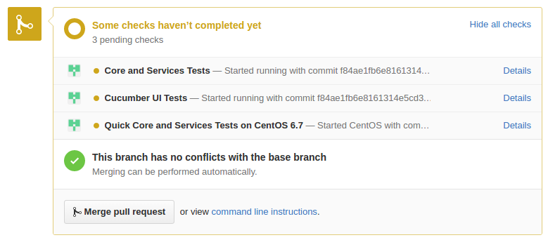
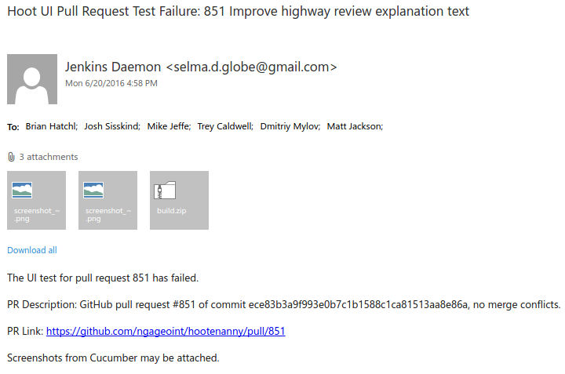

<!doctype html>
<html>
    <head>
        <meta charset="utf-8">
        <meta name="viewport" content="width=device-width, initial-scale=1.0, maximum-scale=1.0, user-scalable=no">

        <title>Jenkins/GitHub/Vagrant: Ingredients for CI Goodness</title>

        <link rel="stylesheet" href="css/reveal.css">
        <link rel="stylesheet" href="css/theme/sky.css">

        <!-- Theme used for syntax highlighting of code -->
        <link rel="stylesheet" href="lib/css/zenburn.css">

        <!-- Printing and PDF exports -->
        <script>
            var link = document.createElement( 'link' );
            link.rel = 'stylesheet';
            link.type = 'text/css';
            link.href = window.location.search.match( /print-pdf/gi ) ? 'css/print/pdf.css' : 'css/print/paper.css';
            document.getElementsByTagName( 'head' )[0].appendChild( link );
        </script>
    </head>
    <body>
        <div class="reveal">
            <div class="slides">
                <section data-markdown>
                    <script type="text/template">
                        ### Jenkins / GitHub / Vagrant: Ingredients for CI Goodness
                    </script>
                </section>
                <section data-markdown>
                    <script type="text/template">
                        ### Jenkins
                        * Our Continuous Integration Server
                        * Add projects that perform some build task
                        * Reports success or failure
                    </script>
                </section>
                <section data-markdown>
                    <script type="text/template">
                        ### History
                        * Initially just built the code
                        * Triggered by commit
                        * Eventually ran tests
                        * Occurred nightly via cron job
                        * Emailed team on broken build/tests
                    </script>
                </section>
                <section data-markdown>
                    <script type="text/template">
                        ### Jenkins Plugins
                        * GitHub Pull Request Builder - builds pull requests and reports results
                        [](foo)
                    </script>
                </section>
                <section data-markdown>
                    <script type="text/template">
                        ### Jenkins Project Config for Hoot UI PRs
                        * Build Step - makes sure eslint and mocha tests pass
                        [](foo)
                    </script>
                </section>
                <section data-markdown>
                    <script type="text/template">
                        ### Hoot Pull Requests
                        * Runs multiple Jenkins jobs
                        [](foo)
                        * This one uses a Vagrant VM to build the code and run tests
                    </script>
                </section>
                <section data-markdown>
                    <script type="text/template">
                        ### Vagrant
                        * Allows tests to run in isolated environment
                        * that is consistent and reproducable
                    </script>
                </section>
                <section data-markdown>
                    <script type="text/template">
                        ### Jenkins Plugins
                        * Mailer Plugin - email notification for build results
                        [](foo)
                        * Very useful for preserving and disseminating test output that is deleted by subsequent runs of the Jenkins job.
                    </script>
                </section>
                <section data-markdown>
                    <script type="text/template">
                        ### Challenges
                        * Widening the pipeline
                        * Running multiple instances of the same Jenkins job in parallel
                        *
                    </script>
                </section>
            </div>
        </div>

        <script src="lib/js/head.min.js"></script>
        <script src="js/reveal.js"></script>

        <script>
            // More info https://github.com/hakimel/reveal.js#configuration
            Reveal.initialize({
                history: true,

                // More info https://github.com/hakimel/reveal.js#dependencies
                dependencies: [
                    { src: 'plugin/markdown/marked.js' },
                    { src: 'plugin/markdown/markdown.js' },
                    { src: 'plugin/notes/notes.js', async: true },
                    { src: 'plugin/highlight/highlight.js', async: true, callback: function() { hljs.initHighlightingOnLoad(); } }
                ]
            });
        </script>
    </body>
</html>
